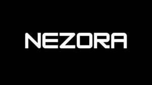

Trade Mark Journal No.2025/037 12 September 2025
UK00004256072 28 August 2025 (9,35,36,42)

- Class 9
- AI software; CAE software; Software; Computer software; Downloadable computer software; Computer software packages; Programming software; Software for computers; Computer application software; Server software; Computer software programs; System software; Computer programs [downloadable software]; Plugin software; Computer software applications; Application software; Interactive computer software; Interactive software; Artificial intelligence software; Artificial intelligence software for analysis; Artificial intelligence and machine learning software; Interactive software based on artificial intelligence; Software for the integration of artificial intelligence and machine learning in the field of Big Data; Machine learning software; Machine learning software for finance; Downloadable computer software for blockchain technology; Application software for cloud computing services; Accounting software; Business software; Business management software; Banking software; Computer software for business purposes; Financial management software; Computer e-commerce software; Data management software; Training software; Payment software; Business technology software; E-commerce software; Software for the processing of business transactions; E-commerce and e-payment software; Computer software for database management; Business intelligence software; Cloud servers; Cloud server software; Cloud network monitoring software; Cloud computing software; Data processing software; Data processing systems; Data processing programs; Computer software to automate data warehousing; Computer software for use as an application programming interface (API); Downloadable computer software for use as an application programming interface (API); Middleware; Software development kit [SDK]; Proxy server software; Web application and server software; Downloadable software; Software development programs; Computer software programs for database management; Computer modules; Software applications for use with mobile devices; Software applications for mobile devices; Software and applications for mobile devices; Downloadable applications for use with mobile devices; Mobile application software.
- Class 35
- Retail services for computer software; Competitive intelligence services; Retail services in relation to computer software; Wholesale services in relation to computer software; Bookkeeping; Computerized accounting services; Market intelligence services; Business intelligence services; Business organisation; Business networking services; Data processing; Data processing for businesses; Data processing for the collection of data for business purposes; Electronic data processing; Data processing verification; Computer data processing; Data entry and data processing; Data processing management; Collection of data; Automated data processing; Retail services in relation to mobile phones.
- Class 36
- Banking; Computerised banking services; Banking services; Automated banking services; Banking and financial services; Financial banking; Electronic banking services; On-line banking services; Paperless electronic banking services; Finance services; Organisation of financial collections; Providing of banking services; Financial information processing; Financial data analysis; Computerised financial data services; Financial data base services; Mobile banking services.
- Class 42
- Software as a service [SaaS] featuring software for machine learning; Software as a service [SaaS] featuring computer software platforms for artificial intelligence; Software as a service [SaaS] featuring software for deep neural networks; Programming of EDP software; Computer software integration; Computer software development; Development of computer software; Software as a service [SaaS] featuring software for deep learning; Software engineering; Computer software engineering; Software as a service [SaaS]; Computer software design; Artificial intelligence as a service (AIAAS); Research in the field of artificial intelligence; Research in the field of artificial intelligence technology; Platforms for artificial intelligence as software as a service [SaaS]; Providing artificial intelligence computer programs on data networks; Software as a service [SaaS] services featuring software for machine learning, deep learning and deep neural networks; Developing computer software; Development and testing of computing methods, algorithms and software; Software as a service; Hosting services, software as a service, and rental of software; Software as a service [SAAS] services; Updating and maintenance of computer software and programs; Maintenance and updating of computer software; Rental of financial management software; Cloud hosting provider services; Private cloud hosting provider service; Cloud computing services; Hosting of servers; Infrastructure as a Service [IaaS]; Cloud-based data protection services ; Hosting of Access Control as a Service (ACaaS) servers and software; Hosting of databases; Server hosting; Engineering services relating to data processing; Development of systems for the processing of data; Software engineering services for data processing; Rental of software for data processing; Data warehousing; Computerised data storage; Data authentication via blockchain; User authentication services using blockchain technology; Platform as a Service [PaaS]; Certification of data via blockchain; IT services; Hosting of mobile applications; Development and design of mobile applications.
NEZORA Ltd